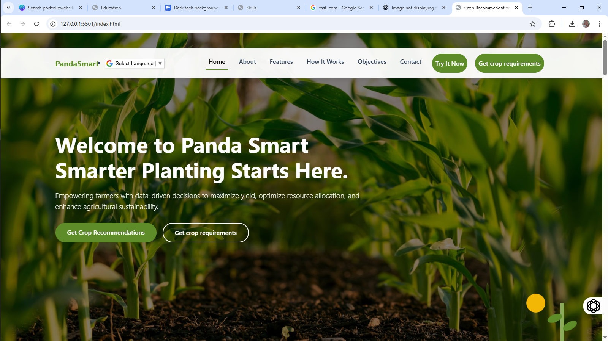

Panda smart — A crop recommendation systemn
Role: MLOps Engineer, Front end Developer
Naive Bayes for soil and enviromental analysis. Deployed with a FLASK API for access and farmer usability.
PyTorch • pandas • FLASK API • scikit-learn